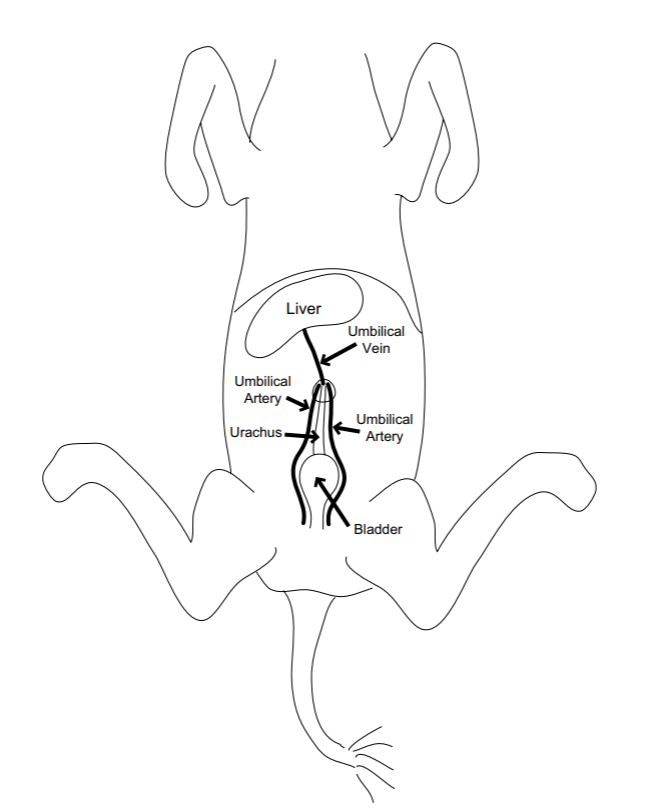
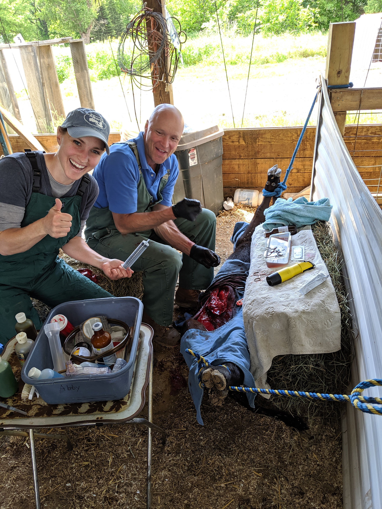
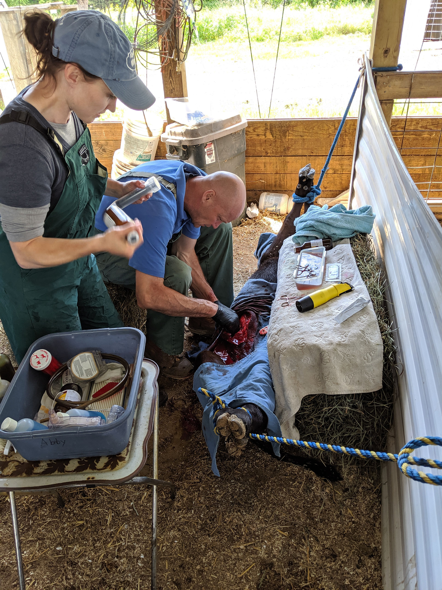
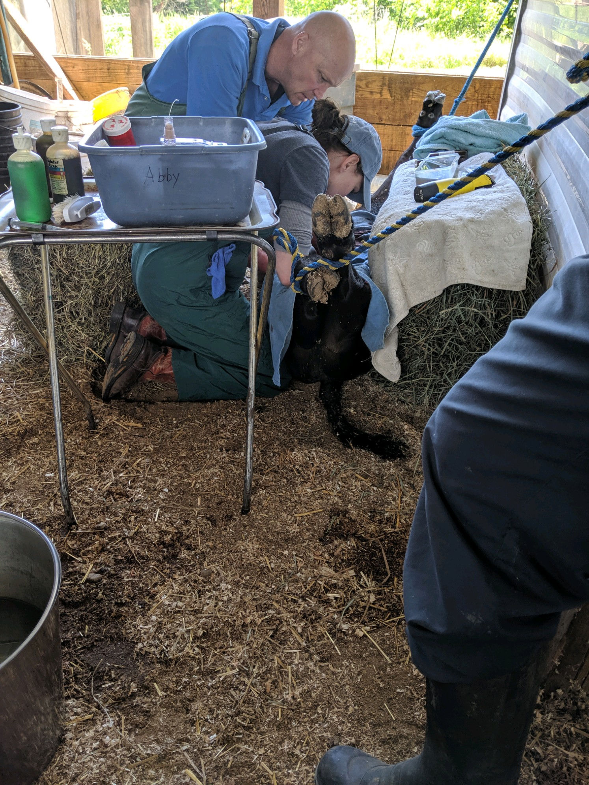
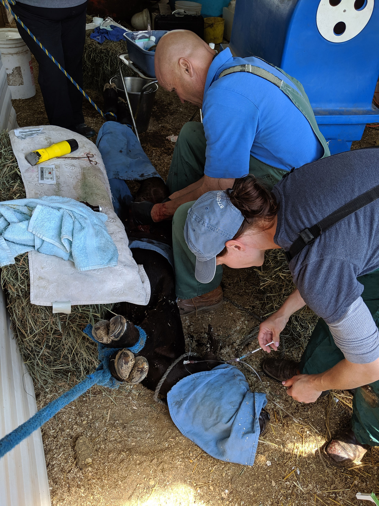
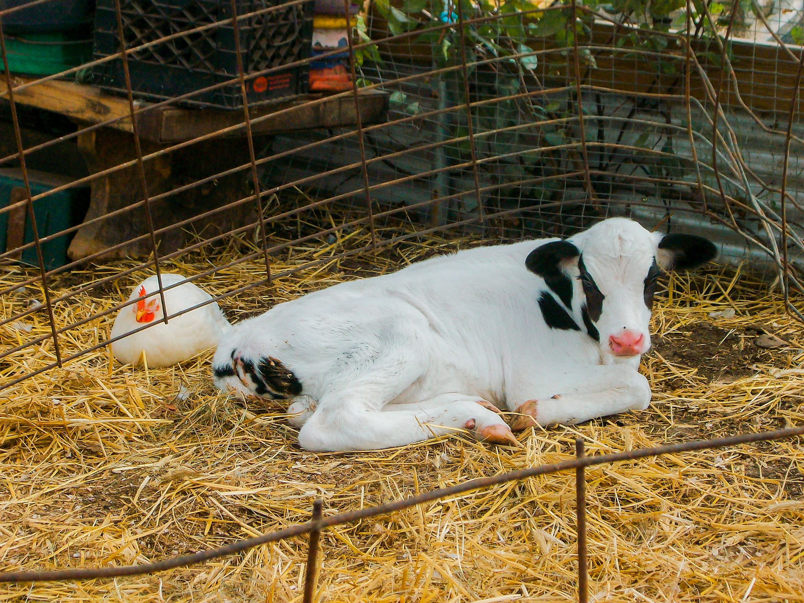

The umbilical (also known as the naval) cord in calves, just like other species, is the pathway in which blood, nutrients and waste is passed back and forth from the placenta to the unborn calf. After a calf is born, the umbilical cord you see externally is composed of the urachus and the umbilical vein. The umbilical arteries should stay in the abdomen after being stretched and broken off during birth. Good hygiene is critical at calving to prevent infections of the umbilical cord. Dipping the umbilical cord (naval dipping) in a cleaning solution is often the main source of infection prevention; however, it's not always possible to dip umbilical cords in a timely fashion. The next important step is to make sure the calving environment is as clean as possible to minimize the umbilical cords exposure to environmental bacteria.
So, what happens when things go wrong? Well, as mentioned above, the urachus is the tubular structure that is responsible for draining urine from the unborn calf to the allantois (part of the placenta that surrounds the unborn calf). After birth, the urachus should completely close, dry up and no longer form a draining tract. However, when the urachus does not close (persistent urachus), or closes and re-opens at a later date (patent urachus), urine continues to leak from the umbilical cord. The amount of leaking urine varies considerably, ranging from an occasional
drip and a moist navel, to full streams of urine. The urine leakage persists as a source of infection, irritation to the skin and limits the ability of the calf to grow and thrive.
Diagnosis of the patent or persistent urachus is accomplished by performing a thorough physical exam and confirmed via ultrasound. Physical exam may reveal a more fluid filled structure or other complications such as hernias. Utrasound images will show how severely the urachus is infected, the size and/or if fluid needs to be drained from the site.
The best treatment for a patent urachus is surgery to remove the problematic structures involved and bring the anatomy of the calf back to normal. Surgery involves removing the urachus and removing any and all sources of infection. The patent urachus is still connected to the urinary bladder; so removing the urachus results in a hole in the urinary bladder. The resulting injury to the urinary bladder is sutured closed. After the urachus is removed, all infected tissues are removed and the urinary bladder is fully repaired; the calf is sutured closed.
Dr. Metcalf and myself, Dr. Mickelson, performed a surgery on a calf that had a patent urachus. It's extremely helpful to have two veterinarians on hand while performing such a surgery. We placed an intravenous catheter, fully sedated him and used ropes and hay bales to hold him on his back. This is field surgery at its finest! We clean the area to the best of our abilities and start surgery! Surgery was successful with minimal complications (thanks to our owners/farmers that were patiently helping!). At the end of the surgery we gave the calf IV fluids, pain medication and antibiotics. The calf will be monitored closely for the next couple of weeks for signs of infection (heat, swelling, drainage of the incision). Best wishes to all involved and hopefully no complications arise now that the anatomy of the calf is normal!





